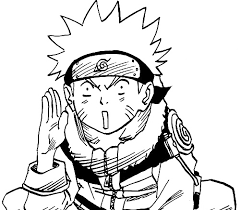

Az anime (アニメ, ejtése [anime], az angol „animation” szó rövidüléséből, ezért is írják katakanával) a rajzfilm általános elnevezése Japánban. A médium eredeti hazájában több korosztályt is megcéloz, és az élőszereplős filmekhez hasonlóan több műfajban készülnek.
Az anime sajátos formája a mangához képest kissé késleltetve, a második világháborút követő zaklatott lelki világú Japánban alakult ki. Például számos műben megfigyelhető az atombomba gombafelhője. Egyik ilyen az Akira, mely a 80-as évek egyik nagy anime disztópiája, amikorra a feszült társadalmi helyzet bizonyos alkotókból fokozott borúlátást váltott ki. Sokszor jellemző a sötét jövőkép, ami jól kifejezi, hogy milyen mélyen benne él a japán társadalomban a nukleáris csapás okozta sokk. Más animék közvetlenül a bombatámadásokat dolgozzák fel történelmi valószerűséggel, példaképp említhető a Hadasi no Gen (はだしのゲン Mezítlábas Gen).
A japán animáció a japán képregényművészetből vezethető le: a manga a hagyományos japán fametszetekre és papírtekercsekre rajzolt történetek és kompozíciók stílusát (a sajátosságok nagy részét innen származtathatjuk), valamint az akkori amerikai képregénystílust ötvözte. A női alakok ábrázolásánál a korabeli amerikai szexideált vették alapul: nagy kék szemű, szőke és karcsú.
Az animéken belül több műfaj létezik, a hagyományos, élőszereplős filmekhez hasonlóan: akció, kaland, gyerekmesék, romantika, dráma, középkorban játszódó vagy fantasy, sci-fi, okkult/horror.
A legtöbb anime átmenetet képez több műfaj között, és ezek több jellegzetességét vegyíti. Így az egyes filmek kategóriákba szorítása nehézségekbe ütközhet. Szokásos, hogy egy akciódús anime humoros, romantikus vagy akár szívbe markoló elemeket is magában foglal. Ugyanúgy előfordulhatnak egy elsősorban romantikus animében erős akciójelenetek. Nem ritkák azok a történetek, amik látszólag viccesen bugyután kezdődnek, de a végkifejlet drámai, komoly mondanivalóval.
Kodomo: (子供 – gyerek, gyermek) elsősorban kisgyermekek számára készült anime vagy manga, ilyen például a Doraemon.
